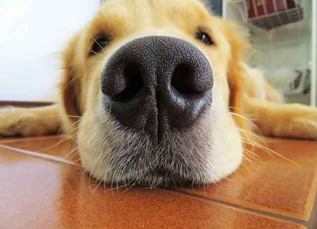
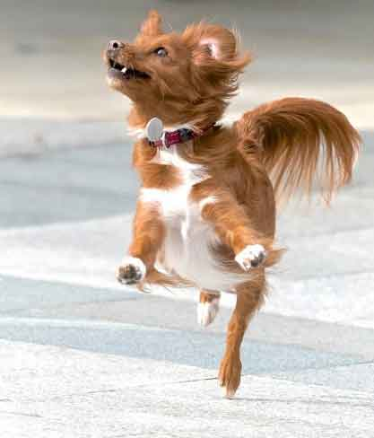

아우우-! 강아지가 하울링 하는 이유!
장난감을 가지고 놀다가, 산책 준비를 하다가, 밥을 기다리다가 보면 갑자기 크게 울부짖는 듯하게 강아지가 하울링을 할 때가 있죠. 약간은 당황스럽기도 하고, 웃기기도 한 "아우우~!" 소리의 정체. 뭔가가 말하고 싶거나 표현하고 싶은 것은 분명한데 뭔지 감이 잘 오지 않으셨던 분들이 대부분이라고 생각합니다. 강아지가 하울링을 하는 데는 여러 가지 뜻이 있습니다. 상황마다 조금씩 다를 수 있죠! 강아지가 하울링 하는 이유, 몇 가지 이유를 알아보겠습니다.
01. 의사소통의 수단
강아지가 말을 할 수 있다면 얼마나 좋을까요? 평소 하고 싶은 이야기가 너무 많을 것 같은데요. 강아지의 하울링은 의사소통 수단이기도 합니다. 즉, 전하고 싶은 메시지가 있을 때 여러 가지 소리를 통해 표현하곤 합니다. 그중 하나가 바로 하울링이죠.
강아지의 조상은 바로 늑대. 늑대가 밤마다 아우우-! 하고 우는 것은 그들만의 소통 방식이었다고 합니다. 강아지 역시 늑대와 비슷한 체형과 모습을 가졌기에 이런 영향으로부터 자유롭지는 못하겠죠. 유전적인 영향으로 하울링을 하는 것일지도 모릅니다. 인간은 이해하지 못하지만, 그들만의 소통 수단이 될 수 있습니다.
02. 불안함을 표현
사람도 눈물을 흘리면서 감정을 표현하는 것은 슬프기도 하지만, 또 한편으로는 두려움이 있기 때문이 아닐까요? 강아지 역시 소리를 내는 것은 불안함을 표현하기 위함일 수 있습니다.
즉, 보살핌을 받으면서 또는 무리 생활을 하던 중 혼자만 탈락하게 될 때 소리를 내게 됩니다. 아마 주인이 외출할 때 혼자됨을 깨닫고 소리를 내는 것이겠죠.
03. 관심의 표현
사람처럼 말을 할 수 있다면, 강아지도 하울링 하는 횟수는 줄어들 것입니다. 하지만 말을 할 수 없는 강아지의 유일한 소통 방식은 소리를 내는 것인데요. 하울링은 주인과 주변 사람들에게 관심을 달라는 메시지일 수 있습니다. 소리를 내는 것으로 자신에게 관심을 집중시키고 혼자가 아님을 확인하고 싶어하는 거이죠.
04. 흥분
강아지가 흥분하거나 기분이 좋을 때 그 감정을 주체할 수 없다면 소리를 내곤 합니다. 사람들이 너무 기뻐 환호성을 지르는 것처럼 강아지도 기쁜 마음을 표현하기 위해 하울링을 할 수 있습니다.
이것은 과거 사냥개의 본능에서 찾을 수 있습니다. 사냥에 성공했거나 주인에게 자신의 위치를 알려줘야 할 때 하울링을 하곤 했었는데요. 이런 야생의 본능이 그대로 남아 지금도 강아지가 하울링을 하는 이유가 아닐까 싶습니다.
이외에도 몸이 아프거나 주변의 환경이 편안하지 않을 때 등 여러 가지 상황에서 하울링을 할 수 있습니다. 강아지가 아무 때나 하울링을 하지 않죠. 만약 하울링의 하는 순간이 올 때 주변 상황과 또 조금 전에 일어났던 일련의 과정을 상기해 보면서 무엇이 문제이고 또 어떤 표현을 하기 위함인지를 이해한다면, 강아지와 조금 더 깊은 유대감을 형성할 수 있지 않을까요?
[출처] 아우우-! 강아지가 하울링 하는 이유! ｜ 작성자 쿠즈펫